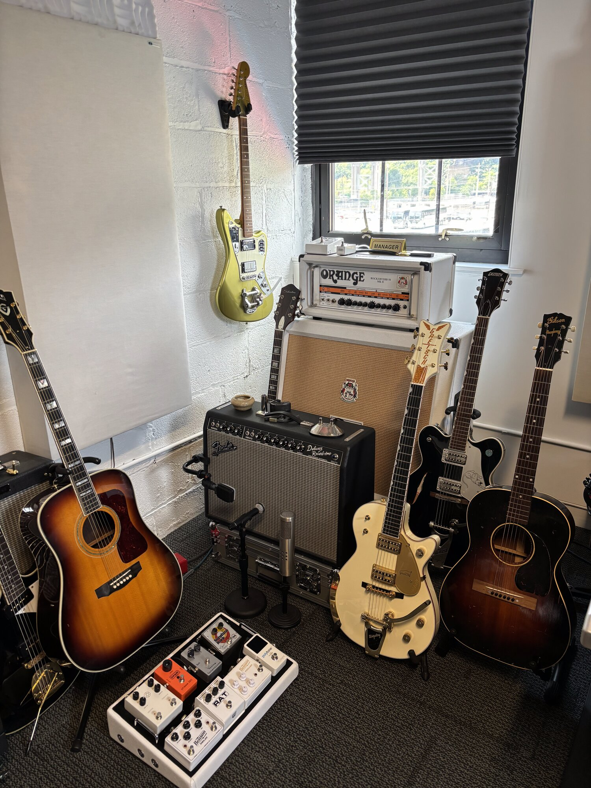
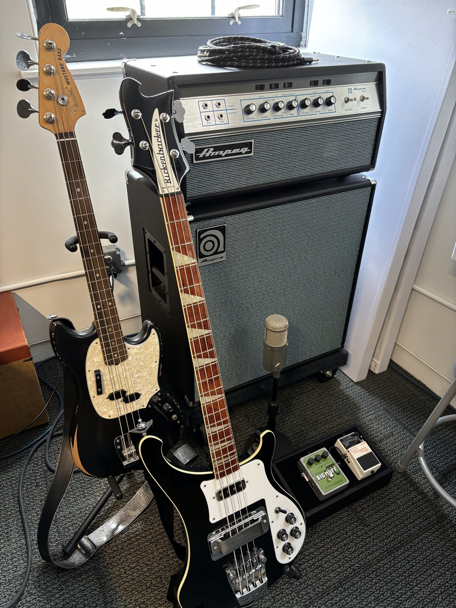
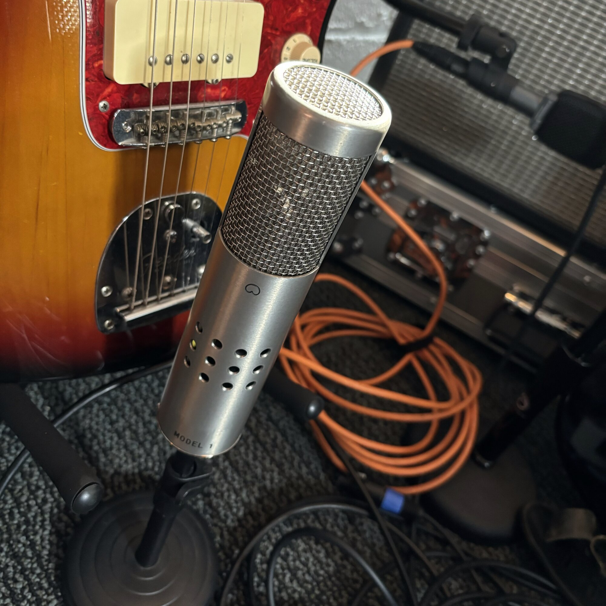
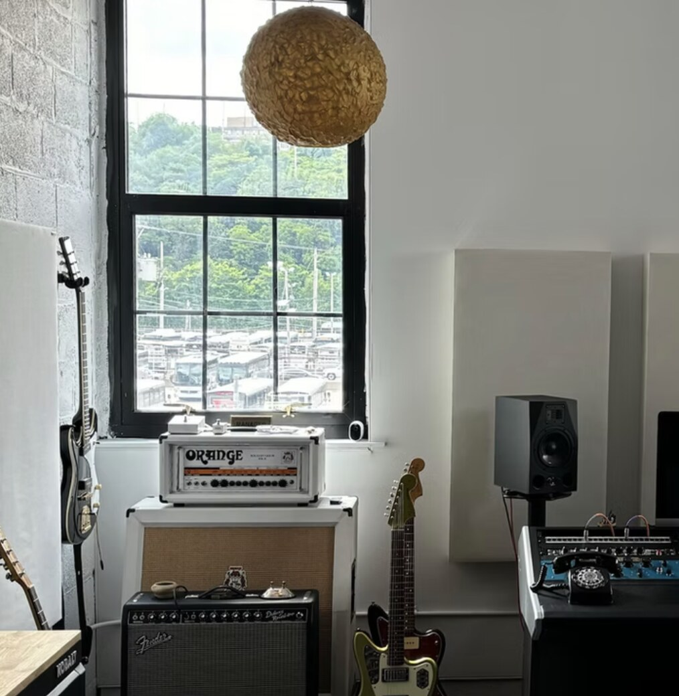
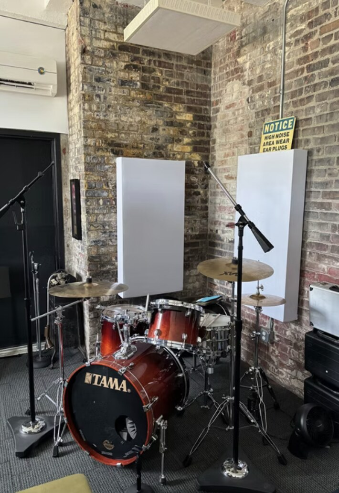
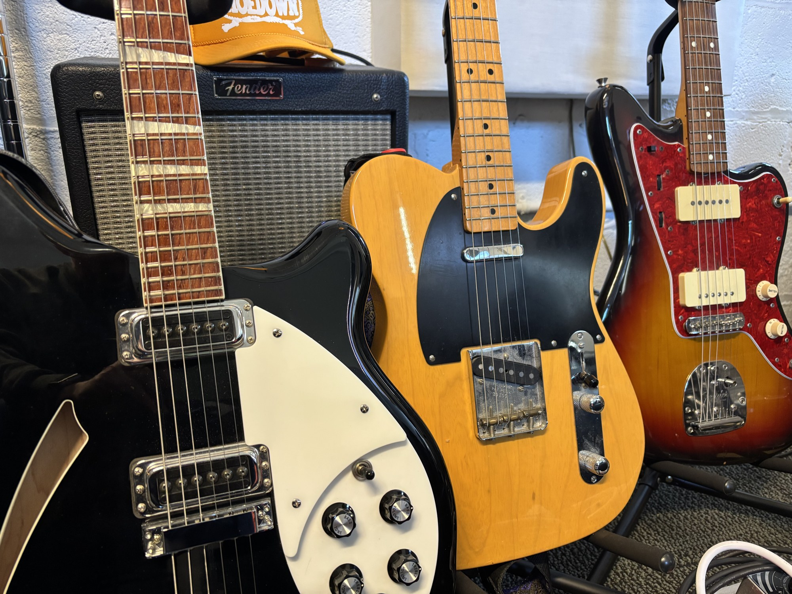
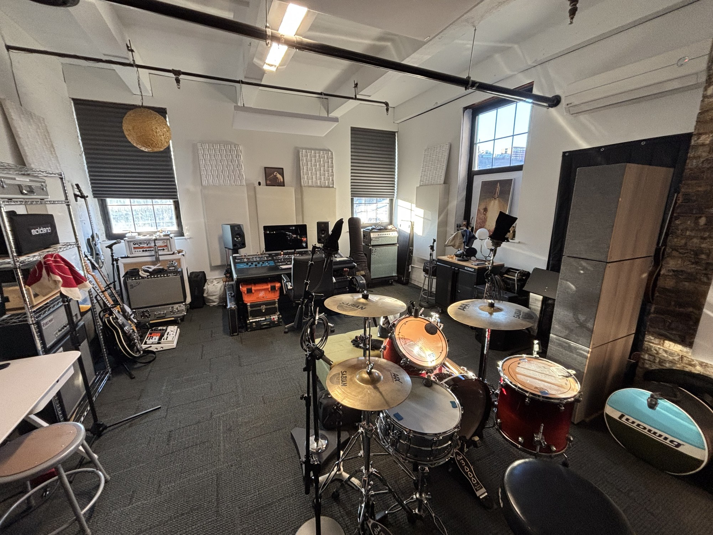
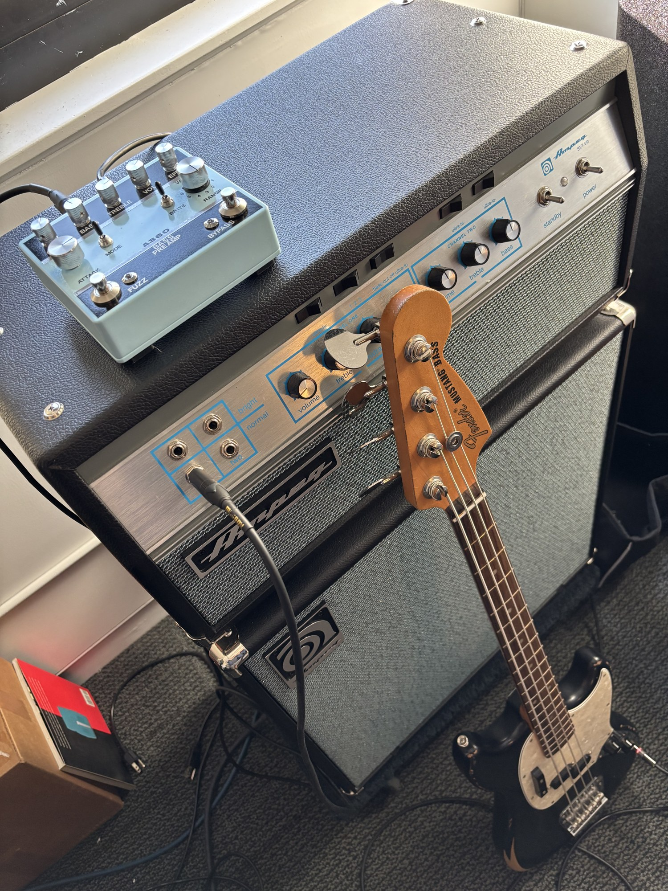
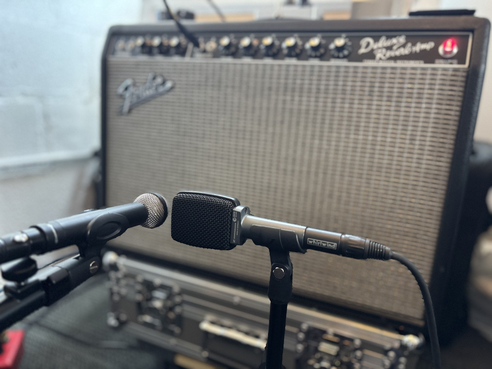

Home of audio engineer Jon Chinn — recording, mixing, mastering, 1-on-1 music production lessons, powered by both digital and analog tools.
Full bands, solo acts, overdubs, podcasts, audiobooks, voice-over — or anything that can be captured by a microphone or generated in the digital domain.
Working collaboratively with artists to create mixes that maintain interest and best tell your story.
The final stage prior to distribution. Beyond perceived loudness, this may include editing, equalization, compression, limiting, and phase-related enhancements to your final approved mixes.
One-on-one introduction to recording techniques to improve your home recordings or begin your career in the music business. Think "piano lessons," but for music production.
Jon Chinn is a producer, audio engineer, and music industry professional working on both sides of the artist/label equation. In addition to working with artists in the studio on countless projects, Jon has extensive experience in live sound, touring, mixing for television and film, digital distribution, immersive audio, theater productions, and museum installations.
"I still love the punk rock dive bar where my adventure began a long, long time ago."









| Hourly | $40 |
| Mixing (per song) | $200 |
| Mastering (per song) | $40 |
| Instruction (per hour) | $40 |